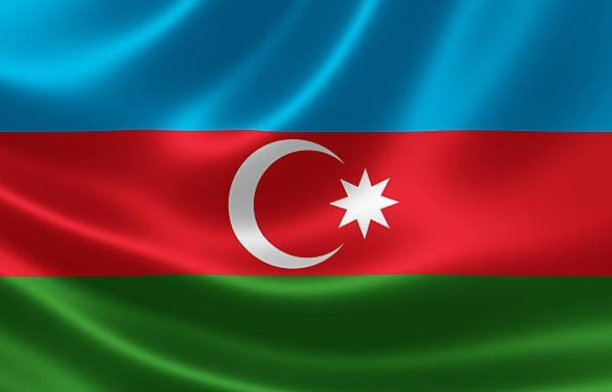
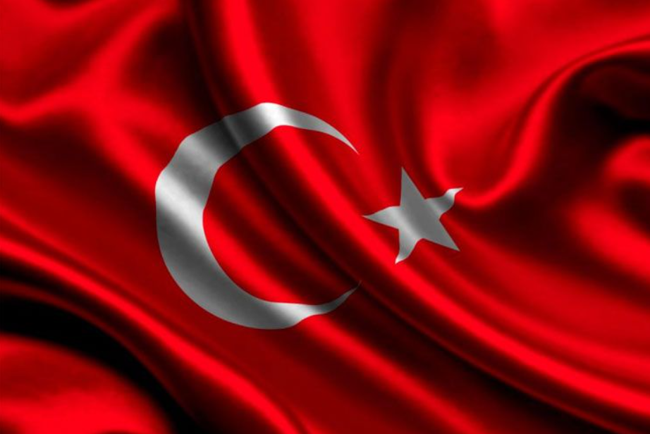
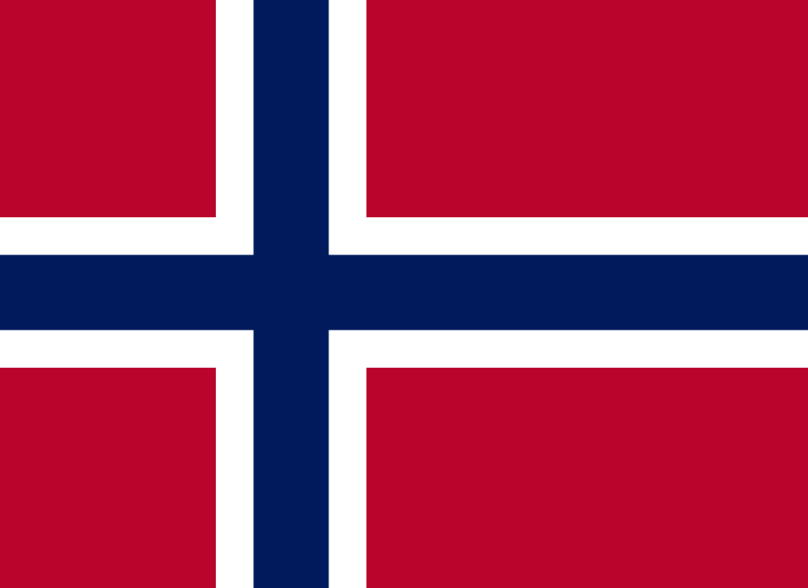
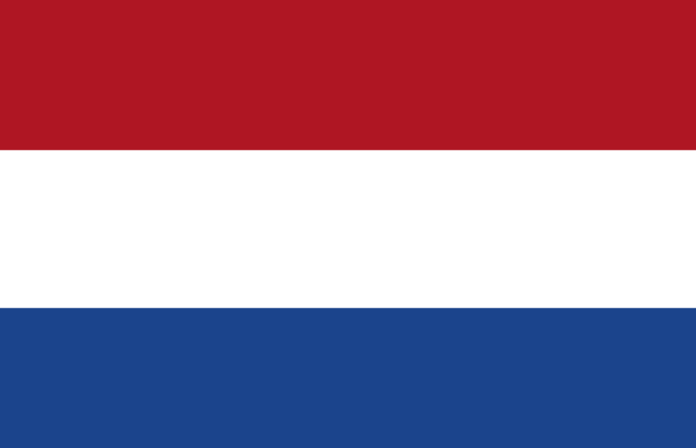

| Ölkə Adları | Paytaxt | Ərazisi | Bayraq | Himn | Qısa Videolar | Şəkillər |
|---|---|---|---|---|---|---|
| Azərbaycan | Bakı | 2430 kv km |  | Qısa Videolar | Şəkillər | |
| Türkiyə | Ankara | 783,356 kv km |  | Qısa Videolar | Şəkillər | |
| Amerika Birləşmiş Ştatları | Vaşinqton | 3,796,742 kv. mil | Qısa Videolar | Şəkillər | ||
| Norveç | Oslo | 385,207 kv km |  | Qısa Videolar | Şəkillər | |
| Niderland | Amsterdam | 41526 kv km |  | Qısa Videolar | Şəkillər |